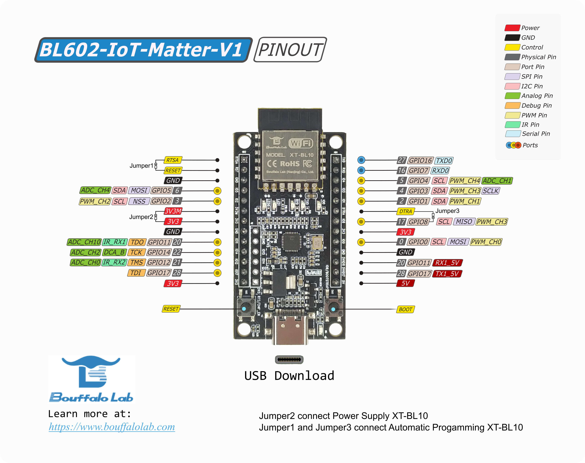
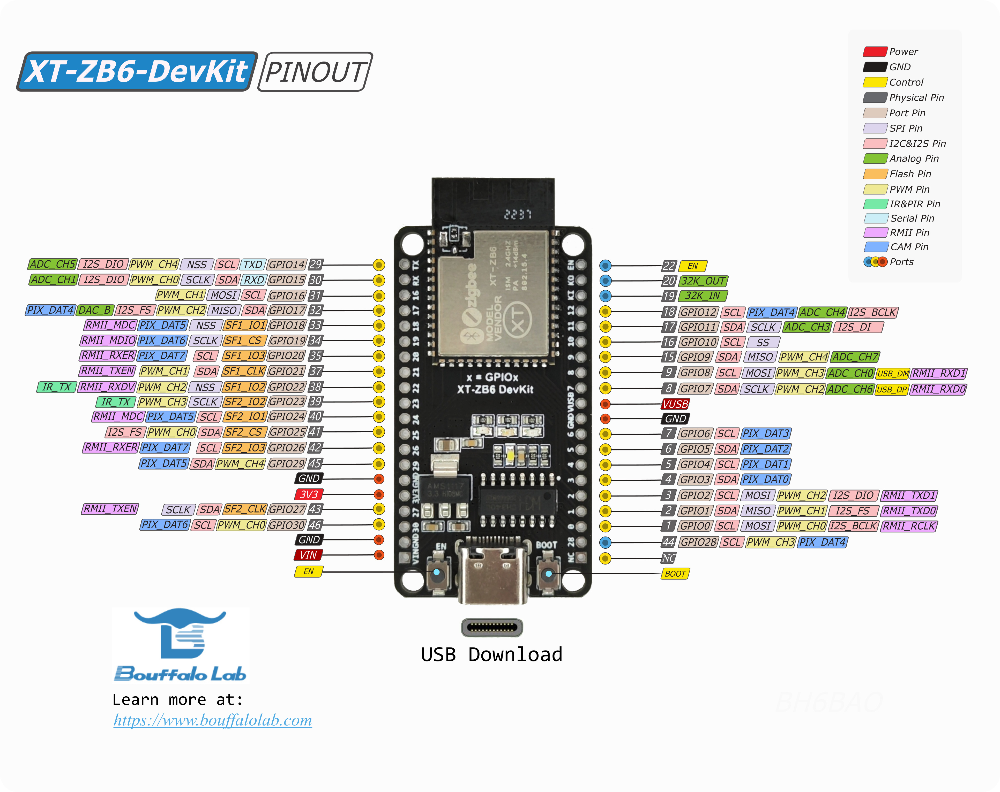

Bouffalo Lab
Contents
Bouffalo Lab#
This example functions as a light bulb device type, with on/off and level capabilities and uses a test Vendor ID (VID) and a Product ID (PID) of 0x8005.
The steps were verified on Bouffalo Lab BL602 and BL706 development board.
BL602-IoT-Matter-V1, here to purchase.BL602-NIGHT-LIGHTXT-ZB6-DevKitBL706-NIGHT-LIGHT
Warning: Changing the PID may cause compilation problems, we recommend leaving it as the default while using this example.
BL602#
BL602/BL604 is combo chip-set for Wi-Fi 802.11b/g/n and BLE 5.0 base-band/MAC.
BL602-IoT-Matter-V1#
BL706#
BL702/BL706 is combo chip-set for BLE and IEEE 802.15.4/ZigBee/Thread. In some cases, e.g. in SDK, we use BL702 as a general name for BL702/BL706 family.
XT-ZB6-DevKit#

Initial setup#
The following steps in this document were validated on Ubuntu 18.04/20.04 and Mac OS.
Install dependencies as specified in the connectedhomeip repository: Building Matter.
Clone and initialize the connectedhomeip repo
git clone https://github.com/project-chip/connectedhomeip.git cd connectedhomeip git submodule update --init --recursive source ./scripts/activate.sh
After environment setup Bouffalolab flash tool,
bflb-iot-tool, imports under this environment. If not, please tryscripts/bootstrap.shfor matter environment update.Setup build environment for
Bouffalo LabSoCRun
setup.shto installBouffalo LabSDK to /opt/bouffalolab_sdkcd third_party/bouffalolab/repo sudo bash scripts/setup.sh
Please execute following command to export
BOUFFALOLAB_SDK_ROOTbefore building.export BOUFFALOLAB_SDK_ROOT=/opt/bouffalolab_sdk
Build CHIP Lighting App example#
The following steps take examples for BL602 develop board BL602-IoT-Matter-V1
and BL706 develop board XT-ZB6-DevKit.
Build lighting app with UART baudrate 2000000
./scripts/build/build_examples.py --target bouffalolab-bl602-iot-matter-v1-light build ./scripts/build/build_examples.py --target bouffalolab-xt-zb6-devkit-light build
Build lighting app with UART baudrate 115200
./scripts/build/build_examples.py --target bouffalolab-bl602-iot-matter-v1-light-115200 build ./scripts/build/build_examples.py --target bouffalolab-xt-zb6-devkit-light-115200 build
Build lighting app with RPC enabled and UART baudrate 115200.
./scripts/build/build_examples.py --target bouffalolab-bl602-iot-matter-v1-light-rpc build ./scripts/build/build_examples.py --target bouffalolab-xt-zb6-devkit-light-rpc build
Download image#
Using script
*.flash.py.After building gets done, python script
chip-bl602-lighting-example.flash.pyorchip-bl702-lighting-example.flash.pywill generate under build output folder for BL602 or BL702 building.Note 1,
*.flash.pyshould be ran under Matter build environment; if python modulebflb_iot_toolis not found, please try to dosource scripts/bootstrap.shor install aspip3 install bflb-iot-tool.
Note 2, different build options will generate different output folder.Download operation steps as below, please check
helpoption of script for more detail.Connect the board to your build machine
Put the board to the download mode:
Press and hold the BOOT button.
Click the RESET or EN button.
Release the BOOT button.
Type following command for image download. Please set serial port accordingly, here we use /dev/ttyACM0 as a serial port example.
bl602-iot-matter-v1without additional build options./out/bouffalolab-bl602-iot-matter-v1-light/chip-bl602-lighting-example.flash.py --port /dev/ttyACM0
xt-zb6-devkitwith 115200 baudrate setting./out/bouffalolab-xt-zb6-devkit-light-115200/chip-bl702-lighting-example.flash.py --port /dev/ttyACM0
To wipe out flash and download image, please append
--eraseto the above command../out/bouffalolab-bl602-iot-matter-v1-light/chip-bl602-lighting-example.flash.py --port /dev/ttyACM0 --erase ./out/bouffalolab-xt-zb6-devkit-light-115200/chip-bl702-lighting-example.flash.py --port /dev/ttyACM0 --erase
Note, better to append –erase option to download image for BL602 develop board at first time.
Using
Bouffalo LabGUI flash toolBLDevCube, please download on this page.Hold BOOT pin and reset chip, put the board in download mode.
Select
DTSfile;Select Partition Table under
examples/platform/bouffalolab/bl602/flash_configorexamples/platform/bouffalolab/bl702/flash_configSelect Firmware Bin;
Select Chip Erase if need;
Choose Target COM port.
Then click Create & Download.
Run the example#
You can open the serial console. For example, if the device is at
/dev/ttyACM0with UART baudrate 2000000 built:```shell picocom -b 2000000 /dev/ttyACM0 ```
To reset the board, Click the RESET or EN button.
To toggle the light bulb’s on/off state by clicking BOOT button, which also toggles the LED.
To do factory reset, press BOOT button over 4 seconds, release BOOT button after led blink stopped.
Test Commission and Control with chip-tool#
Please follow chip_tool_guide and guide to build and use chip-tool for test.
Prerequisite for Thread Protocol#
Thread wireless protocol runs on BL706, which needs a Thread border router to connect Thread network to Wi-Fi/Ethernet network. Please follow this guide to setup a raspberry Pi border router.
After Thread border router setup, please type following command on Thread border router to get Thread network credential.
sudo ot-ctl dataset active -x
Commissioning over BLE#
Reset the board or factory reset the board
Enter build out folder of chip-tool and running the following command to do BLE commission
BL602
./chip-tool pairing ble-wifi <node_id> <wifi_ssid> <wifi_passwd> 20202021 3840
BL706
./chip-tool pairing ble-thread <node_id> hex:<thread_operational_dataset> 20202021 3840
<node_id>, which is node ID assigned to device within chip-tool fabric
<wifi_ssid>, Wi-Fi network SSID
<wifi_passwd>, Wi-FI network password
<thread_operational_dataset>, Thread network credential which runningsudo ot-ctl dataset active -xcommand on border router to get.
Cluster control#
After successful commissioning, cluster commands available to control the board.
OnOff cluster
The following command shows to toggle the LED on the board
$ ./chip-tool onoff toggle <node_id> 1
Level cluster
The following command shows to move level to 128.
$ ./chip-tool levelcontrol move-to-level 128 10 0 0 <node_id> 1
Color cluster
The following command shows to change hue and saturation to 240 and 100
$ ./chip-tool colorcontrol move-to-hue-and-saturation 240 100 0 0 0 <node_id> 1
Identify Light
The following command shows to identify the board 10 seconds
./chip-tool identify identify 10 <node_id> 1
Test OTA software upgrade with ota-provider-app#
Please take guide for more detail on ota-provider-app build and usage.
Create the Matter OTA with Bouffalolab OTA bin FW_OTA.bin.xz.hash#
Build
Bouffalo LabOTA image as following execution using python script*.flash.pyunder firmware build out folder,./<output_firmware_name>.flash.py --build
After script executed, a folder
ota_imagesand an imageFW_OTA.bin.xz.hashwill be generated.FW_OTA.bin.xz.hashis compressed with hash verification for build out firmware.
Build Matter
*.otaOTA image withBouffalo LabOTA image under connectedhomeip repo folder$ ./src/app/ota_image_tool.py create -v 0xFFF1 -p 0x8005 -vn 10 -vs "1.0" -da sha256 <FW_OTA.bin.xz.hash> lighting-app.ota
lighting-app.ota should have greater software version which is defined by macro
CHIP_DEVICE_CONFIG_DEVICE_SOFTWARE_VERSIONin CHIPProjectConfig.h
Start ota-provider-app#
Start ota-provider-app for lighting-app.ota
$ rm -r /tmp/chip_* $ ./chip-ota-provider-app -f <path_to_ota_bin>/lighting-app.ota
where
<path_to_ota_bin>is the folder for lighting-app.ota.Provision ota-provider-app with assigned node id to 1
$ ./chip-tool pairing onnetwork 1 20202021 $ ./chip-tool accesscontrol write acl '[{"fabricIndex": 1, "privilege": 5, "authMode": 2, "subjects": [112233], "targets": null}, {"fabricIndex": 1, "privilege": 3, "authMode": 2, "subjects": null, "targets": null}]' 1 0
Start ota software upgrade#
BLE commission BL602/BL702 lighting if not commissioned.
Start OTA software upgrade process
./chip-tool otasoftwareupdaterequestor announce-ota-provider 1 0 0 0 <node_id_to_lighting_app> 0
where
<node_id_to_lighting_app>is node id of BL602/BL702 lighting app.After OTA software upgrade gets done, BL602/BL702 will get reboot automatically.
Run RPC Console#
Build chip-console following this guide
Start the console
$ chip-console --device /dev/ttyUSB0 -b 2000000
Get or Set the light state
rpcs.chip.rpc.Lighting.Get()rpcs.chip.rpc.Lighting.Set(on=True, level=128)